Study J01 as a complete chapter: models and assumptions → derivations → solved controls → refinements → one comprehensive calculation. The cavity/source history is supplied here; laser absorption and PFC thermodynamics enter after J04. Ask about any step that is unclear.
将 J01 作为完整章节学习：模型与假设 → 推导 → 已解对照 → 改进 → 一道综合计算。本阶段给定腔体／源历程；激光吸收与 PFC 热力学在 J04 之后引入。任何不清楚的步骤均可继续提问。
Goal: explain how finite cavity work becomes liquid motion, why symmetry must break to select a jet direction, and what pressure impulse actually predicts.
目标：解释有限腔体做功如何转为液体运动、为什么必须破坏对称性才能选出射流方向，以及压力冲量究竟预测什么。
1 · Start with a cavity, an observer and a finite energy scale
1 · 从腔体、观察量与有限能量尺度开始
Take a spherical vapor cavity at its maximum radius, initially at rest, in an unbounded liquid. During the first control calculation the liquid is incompressible and inviscid, interior pressure stays constant, and surface tension is omitted. Define the positive driving pressure as ambient pressure minus cavity pressure. These assumptions create an exactly solvable inertial collapse; they do not create a directed jet. A perfectly spherical interface stays spherical under perfectly symmetric initial and boundary data.
取无限液体中处于最大半径且初始静止的球形蒸气腔。第一组对照计算假定液体不可压缩、无黏，腔内压力恒定，并省略表面张力。正的驱动压差定义为环境压力减腔内压力。这些假设产生可精确求解的惯性塌缩，但不会产生定向射流。完全对称的初始和边界条件下，完全球形界面会保持球形。
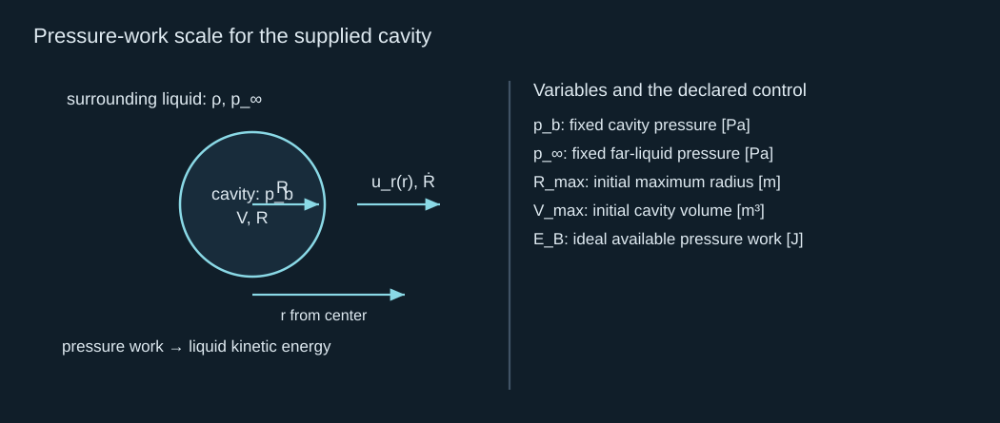
Pressure-work scale for the supplied cavity
给定腔体的压力做功尺度
Pressure work is force times boundary displacement, integrated over the moving surface. If the pressure difference is constant, the work released while the cavity volume decreases is that pressure difference times lost volume. Its finite maximum is the displayed scale. This scale is useful for comparing jets made from the same cavity, but it is not the absorbed laser energy: heating, phase change, outward waves and other channels can make those quantities very different. For now the cavity is our mechanical input.
压力做功是边界力乘边界位移，再对运动表面积分。若压差恒定，腔体体积减小时释放的功就是压差乘损失的体积，其有限最大值为所示尺度。这个尺度可比较同一腔体产生的射流，但不等于激光吸收能量：加热、相变、外传波及其他通道会使两者相差很大。目前腔体是力学输入。
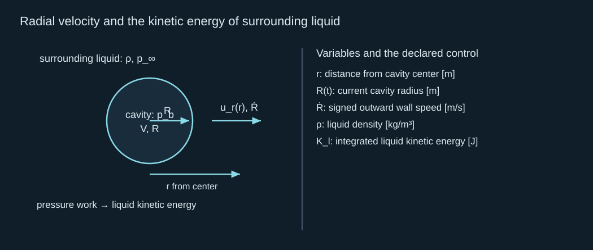
Radial velocity and the kinetic energy of surrounding liquid
径向速度与周围液体的动能
The inverse-square field follows from the same volume flux crossing every concentric sphere. Substituting it into the kinetic-energy integral gives the radius-dependent liquid inertia that you already used in the earlier lessons. The liquid throughout space moves; assigning the inertia to gas mass inside the cavity would give the wrong model. This is also why a small remaining radius does not imply that little surrounding-liquid energy is present.
反平方速度场来自相同体积流量穿过每个同心球面。将其代入动能积分，可得您在早期课程中使用过的随半径变化的液体惯性。运动的是整个空间中的液体；把惯性分配给腔内气体质量会得到错误模型。因此，剩余半径很小并不意味着周围液体能量很少。
2 · Solve the radial control before adding a direction
2 · 先解径向对照，再引入方向
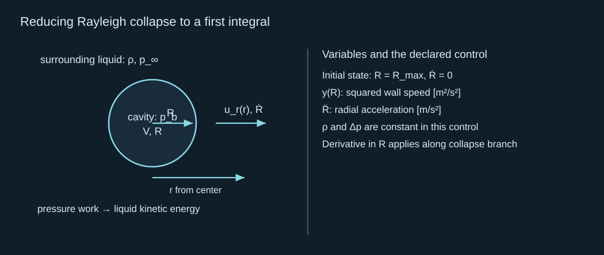
Reducing Rayleigh collapse to a first integral
将 Rayleigh 塌缩化为第一积分
The change of variable treats wall speed as a function of radius along the monotone collapse branch. Apply the chain rule, multiply the resulting first-order equation by the integrating factor, and integrate from the initial radius. The integration constant is fixed by the initially stationary wall. Take the negative square root because the cavity shrinks. This supplies a velocity law, rather than an assumed constant collapse speed.
变量替换把单调塌缩分支上的壁速看作半径的函数。应用链式法则，将所得一阶方程乘以积分因子，再从初始半径积分。初始静止的壁面确定积分常数。因为腔体缩小，取负平方根。这给出速度规律，而不是假设恒定塌缩速度。
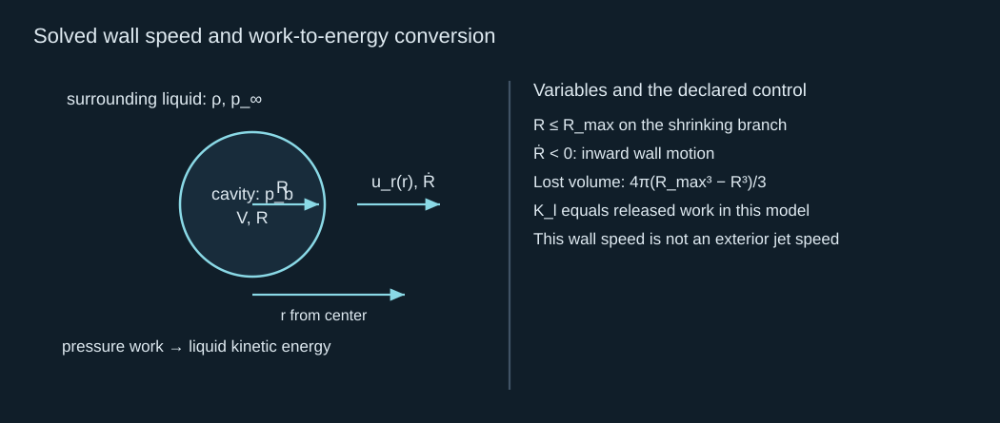
Solved wall speed and work-to-energy conversion
已解壁速与做功到动能的转换
Notice the finite energy and divergent wall speed as the radius tends to zero. The velocity divergence comes with a shrinking spatial region; it does not supply an unlimited energy reservoir. Later chapters will make finite jet mass and finite pressure observation windows explicit. Gas compression and liquid compressibility intervene before this ideal limit in real cavities. Brennen gives this radial control and its collapse limits in his collapse chapter.
注意，半径趋于零时能量有限而壁速发散。速度发散伴随空间区域收缩，并不提供无限能量储库。后续章节会明确有限射流质量和有限压力观察时窗。真实腔体在这个理想极限之前会受到气体压缩及液体可压缩性的影响。Brennen 在其塌缩章节中给出了径向对照及其极限。
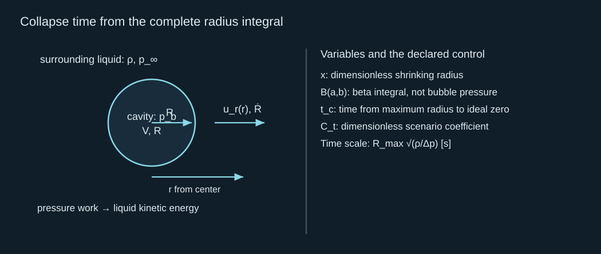
Collapse time from the complete radius integral
由完整半径积分得到塌缩时间
This calculation both recovers your earlier proportional relation and identifies its coefficient. Replacing radius by a dimensionless variable takes all dimensions outside the integral. The remaining integral is a number because this control has no other independent parameter. A new gas law, moving boundary or pressure waveform creates additional dimensionless parameters and generally changes the coefficient. Multiplying the constant driving pressure by four halves this control time while leaving its coefficient unchanged.
该计算既恢复您此前的比例关系，也确定其系数。用无量纲变量替换半径后，所有量纲均移到积分外。因为这个对照没有其他独立参数，剩余积分只是一个数。新的气体规律、运动边界或压力波形会引入更多无量纲参数，通常也会改变系数。恒定驱动压差增至四倍，会使该对照时间减半，而系数保持不变。
3 · Pressure impulse is a spatial field, with units of pressure times time
3 · 压力冲量是空间场，单位是压力乘时间
For a short forcing interval, first freeze the interface geometry and neglect viscosity and convective displacement during that interval. Integrate the local momentum equation in time. The result involves the spatial gradient of pressure impulse, not pressure impulse alone. A spatially uniform pressure added everywhere has no gradient and gives no velocity change in this incompressible control. A pressure difference between ends does produce a gradient.
在短驱动时段内，先冻结界面几何，并忽略该时段中的黏性和对流位移。对局部动量方程作时间积分，所得结果涉及压力冲量的空间梯度，而不是单独的压力冲量。不可压缩对照中，处处增加相同压力没有梯度，也就没有速度变化；两端压差则确实产生梯度。
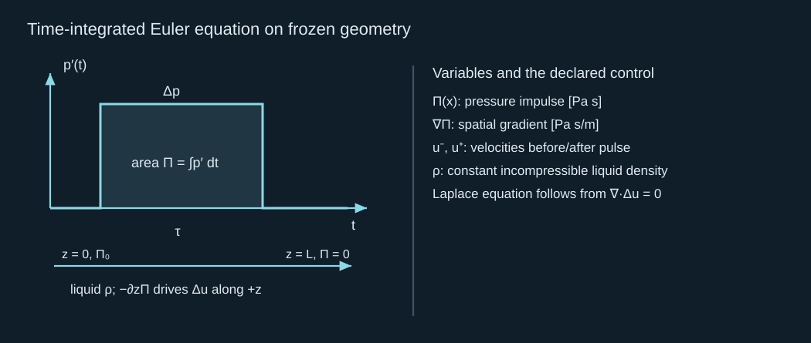
Time-integrated Euler equation on frozen geometry
冻结几何中的 Euler 方程时间积分
The last equation follows by taking the divergence of the velocity change and using incompressibility. It closes a spatial boundary-value problem once pressure impulse or normal velocity change is prescribed on the appropriate boundaries. At a pressure-release surface the pressure-impulse increment can be specified as zero. A fixed impermeable wall constrains its normal derivative through the no-penetration condition. Thus geometry can change the velocity field even with the same integrated source pulse. This is the useful core of Cooker and Peregrine’s pressure-impulse treatment.
最后一个方程来自对速度变化取散度并使用不可压缩性。只要在相应边界上给定压力冲量或法向速度变化，就形成空间边值问题。在压力释放表面，可将压力冲量增量指定为零；固定不透壁面通过不穿透条件约束其法向导数。因此，相同积分源脉冲下，几何仍能改变速度场。这是Cooker 与 Peregrine 压力冲量理论的有用核心。
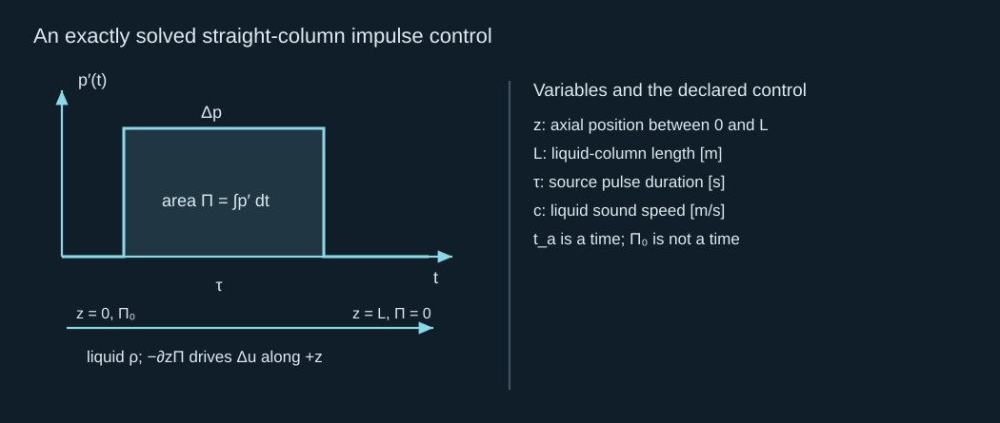
An exactly solved straight-column impulse control
可精确求解的直液柱压力冲量对照
The linear impulse field solves the one-dimensional Laplace equation with those endpoint values. Its constant gradient gives a uniform speed increment. Uniformity has been derived from this geometry and boundary data; it has not been inferred merely from the pulse being long compared with sound travel. For a general cavity, the solution is not linear in position. Check sound transit, interface movement and convective displacement separately. Several acoustic crossings can permit pressure communication without proving a uniform field or a precise real-jet approximation.
线性冲量场满足给定端值的一维 Laplace 方程，其恒定梯度产生均匀速度增量。均匀性是由几何和边界数据推导出的，并非仅因为脉冲比声传播时间长便作出推断。一般腔体中的解并不随位置线性变化。声传播、界面运动及对流位移需分别检查。经历多次声传播可允许压力沟通，但不能证明场均匀或真实射流近似精确。
The approximation can be checked term by term. Integrating the full incompressible momentum equation at a fixed point that stays inside the liquid leaves convective and viscous residuals. Estimate their size with the actual local flow length and speed, rather than treating pulse duration as the only validity criterion. A narrow moving interface can have a much shorter geometrical length than the overall liquid layer.
可逐项检查这个近似。在始终处于液体内的固定点积分完整不可压缩动量方程，会留下对流及黏性残项。应用实际局部流动长度与速度估计它们的大小，不能把脉冲时长当作唯一有效性标准。很窄的运动界面可能具有比整体液层更短的几何尺度。
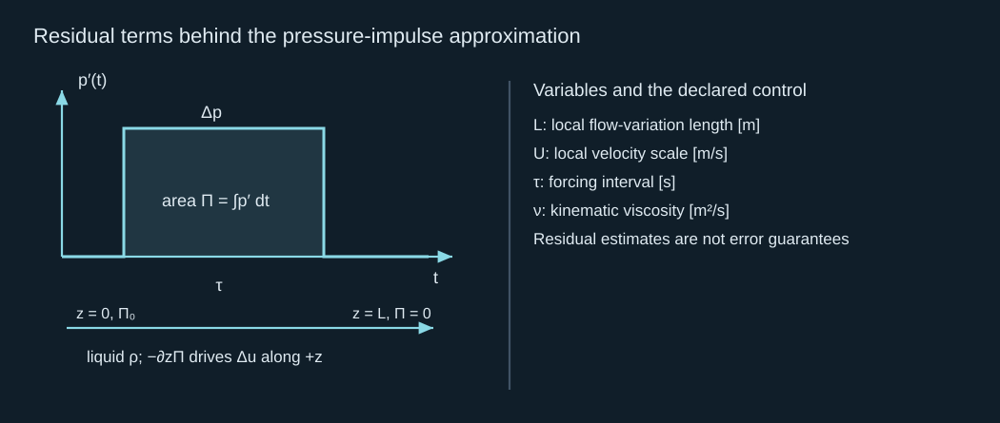
Residual terms behind the pressure-impulse approximation
压力冲量近似背后的残项
The sound-crossing ratio checks whether compressible communication is fast on the imposed pulse scale. The displacement ratio checks whether the assumed domain remains close to its initial shape. These are different tests, and a small convective residual does not force the harmonic impulse field to be spatially uniform. The straight-column example has a convective displacement scale of 1.5 percent of its length. A strongly focused region can fail the same frozen-geometry test even though the outer liquid column passes it.
声传播比检查可压缩沟通相对规定脉冲是否足够快，位移比检查假定区域是否仍接近初始形状。这是不同检验；小对流残项不会迫使调和冲量场在空间上均匀。直液柱例子的对流位移尺度为长度的百分之 1.5。强聚焦区域可能无法通过同一冻结几何检验，即使外部液柱可以通过。
4 · A pressure gradient supplies a direction and an integrated momentum scale
4 · 压力梯度提供方向及积分动量尺度
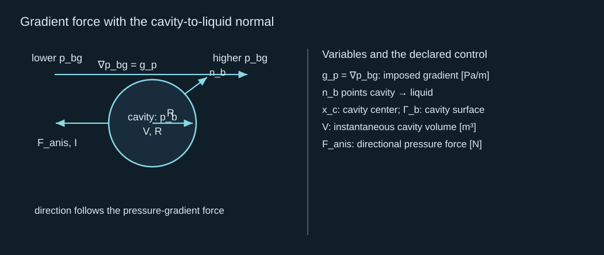
Gradient force with the cavity-to-liquid normal
使用腔体指向液体法向的梯度力
Apply the divergence theorem to the closed cavity surface. The constant pressure contribution cancels, while a uniform gradient integrates to cavity volume times that gradient. The minus sign means the cavity’s directional pressure forcing points toward lower background pressure. This pressure-gradient picture explains direction without assuming a jet shape. It is a weak-asymmetry control: a rapidly translating or strongly deformed cavity changes the full solution.
对封闭腔体表面应用散度定理。恒定压力贡献相消，均匀梯度则积分为腔体体积乘该梯度。负号意味着腔体定向压力驱动指向较低背景压力。这一压力梯度图景不需要先假设射流形状便可说明方向。它属于弱不对称对照；快速平移或严重变形的腔体会改变完整解。
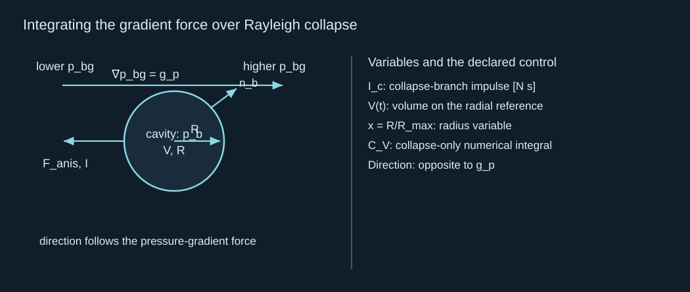
Integrating the gradient force over Rayleigh collapse
沿 Rayleigh 塌缩积分梯度力
Insert the solved radial speed into the time integral and use time increment equal to radius increment divided by wall speed. The extra volume factor raises the power of the dimensionless radius in the integrand. This derivation tells us exactly what is included: only the shrinking branch. A time-symmetric Rayleigh growth-plus-collapse reference doubles the impulse. An actual heating-driven growth history need not be that mirror image, so calculate its volume-time integral rather than silently doubling.
把已解径向壁速代入时间积分，并使用时间增量等于半径增量除以壁速。额外的体积因子提高了被积式中的无量纲半径幂次。该推导明确包含的只有收缩分支。时间对称的 Rayleigh 生长加塌缩参照会使冲量加倍，但实际加热驱动的生长未必是镜像，因此应计算其体积时间积分，而不是默认加倍。
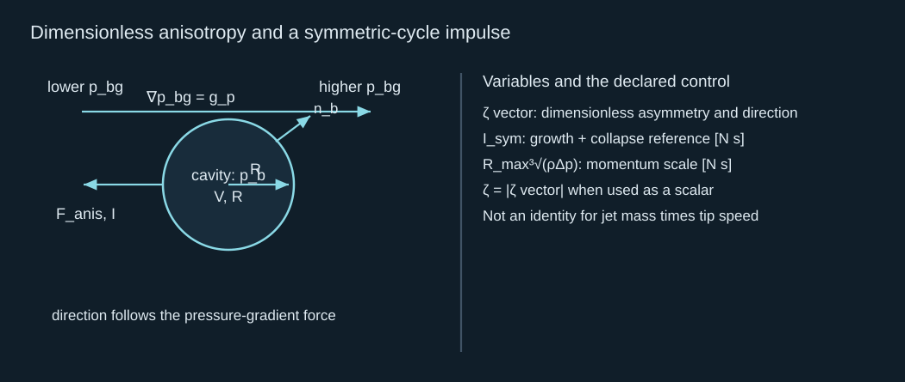
Dimensionless anisotropy and a symmetric-cycle impulse
无量纲不对称性与对称周期冲量
Kelvin impulse is a useful directional momentum descriptor for potential flow. It does not say that all of this impulse belongs to one observed filament, or that the fastest tip represents the speed of its entire mass. Liquid translation, return flow and surrounding momentum also participate. That distinction will become essential when comparing a thin fast internal jet with a slower, more massive exterior jet.
Kelvin 冲量是势流中有用的定向动量描述量，但并不意味着全部冲量属于一根可见细丝，也不意味着最快尖端代表全部质量的速度。液体平移、回流及周围动量也参与其中。比较很细很快的内部射流与更慢、更重的外部射流时，这个区别尤为关键。
5 · Boundaries and a conditional internal-jet scaling
5 · 边界与有条件的内部射流尺度律
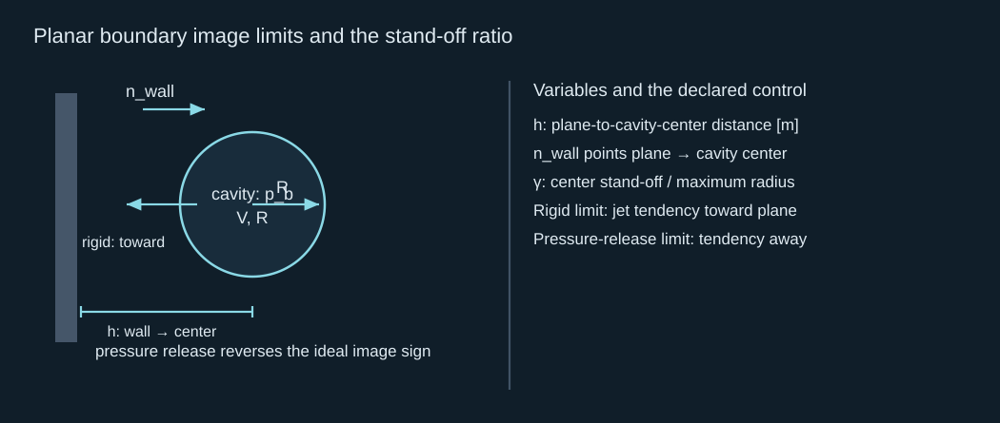
Planar boundary image limits and the stand-off ratio
平面边界镜像极限与离壁比
For the ideal planar limits, image flow translates the boundary condition into an equivalent anisotropy. The sign reverses between an impermeable plane and a pressure-release plane. Curvature, finite thickness, compliance and a moving free surface can alter this correspondence; equal stand-off ratios do not guarantee equal jets. Here the formula is a reduced reference for a specified plane, not a replacement for resolving an actual flexible boundary.
理想平面极限中，镜像流把边界条件转为等效不对称性。不透平面与压力释放平面的符号相反。曲率、有限厚度、柔顺性及运动自由表面可改变这种对应；相同离壁比不保证相同射流。此式是给定平面的降阶参照，不替代真实柔性边界的解析。
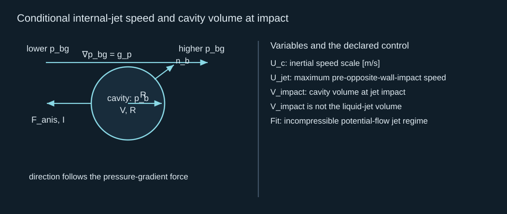
Conditional internal-jet speed and cavity volume at impact
有条件的内部射流速度与冲击时腔体体积
Use this result from Supponen et al. (2016) with its definition intact: the velocity concerns an internal re-entry jet before it hits the opposite cavity interface. Their fitted weak/intermediate calculation does not give a universal exterior-ejection law. Strong asymmetry is geometry dependent, and very weak jets may remain largely inside the rebound. The shrinking impact volume is cavity volume; using it as liquid jet mass would invent an energy or momentum relation absent from the paper.
使用 Supponen 等（2016） 的结果时需保持定义：该速度指内部回入射流撞击对侧腔体界面之前的速度。弱／中等不对称计算的拟合不是通用外部喷出规律。强不对称依赖具体几何，极弱射流可能大部分留在回弹泡内。缩小的冲击体积是腔体体积；若把它作为液体射流质量，就会虚构论文没有给出的能量或动量关系。
The apparent inverse-anisotropy divergence is a signal to check compressibility and the definition of the tracked liquid mass. It cannot justify arbitrarily high useful output. Nevertheless, within the stated range the scaling is productive: given a cavity radius, pressure and plane distance, it estimates a speed and tells you whether that estimate is already approaching sound speed. This is a quantitative bridge from radial energy to directional shape dynamics, which J02 will close as a spatial interface problem.
表面上的不对称性倒数发散提示应检查可压缩性以及被追踪液体质量的定义，不能据此推出任意高的有用输出。但在声明范围内，该尺度律确实有预测作用：给定腔体半径、压力和平面距离，可估算速度，并判断该估值是否已接近声速。这是从径向能量到定向形状动力学的定量桥梁，J02 将把它闭合为空间界面问题。
Consider two distant rigid planes on opposite sides of the cavity. At leading image order their directional contributions add as vectors. Equal distances cancel the dipole-like directional impulse. They do not remove confinement or all shape deformation: two equal opposing jets or a flattened collapse can preserve reflection symmetry while still departing strongly from a sphere. Therefore zero net directional impulse is not a proof of “no jet.” It means that this first directional descriptor cannot select a single preferred sense.
考虑腔体两侧相距较远的刚性平面，首阶镜像贡献按向量相加。相等距离会抵消类似偶极的定向冲量，但不会消除约束或全部形变：两个相等反向射流或扁平塌缩可保持反射对称，同时显著偏离球形。因此净定向冲量为零不是“没有射流”的证明，而是这个首阶定向描述量不能选出单一优先朝向。
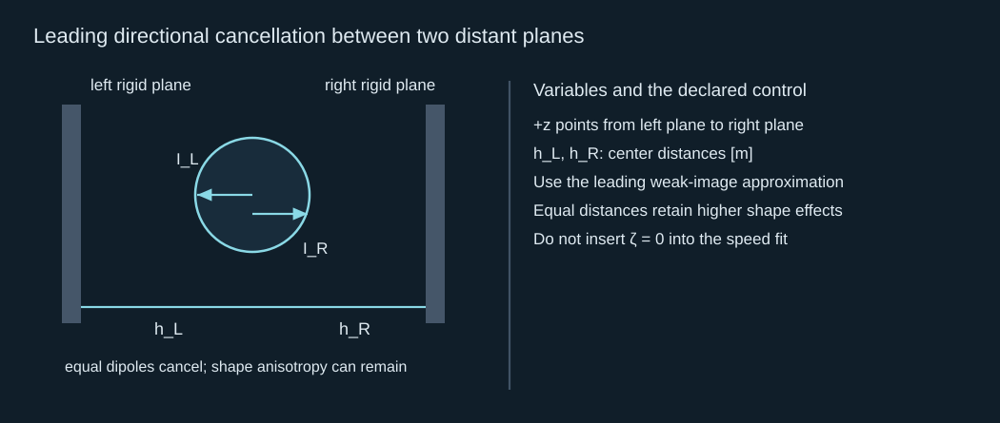
Leading directional cancellation between two distant planes
两个远平面间的首阶定向抵消
This example also shows why the magnitude of an anisotropy vector must not be substituted into a speed fit outside its assumptions. A vanishing vector created by cancellation is not the same geometry as an almost spherical isolated cavity with one tiny imposed gradient. Their higher spatial modes differ. J02 therefore carries the full geometry forward instead of treating one scalar as a complete jet state.
该例也说明，不可超出假设把不对称向量大小代入速度拟合。由抵消产生的零向量，不等于一个近球形孤立腔体受到单个微小梯度的几何；两者更高空间模式不同。因此 J02 会向后保留完整几何，而不把一个标量当作完整射流状态。
Comprehensive calculation · one cavity, two sources of direction
综合计算 · 一个腔体、两种定向来源
Use an illustrative liquid with density 1,000 kg/m³, sound speed 1,500 m/s, driving pressure 100 kPa and maximum cavity radius 100 μm. Compare an imposed gradient of 2.0×10⁷ Pa/m along +z with a rigid plane 200 μm from the cavity center. Treat those as separate cases; do not add the anisotropies without declaring a combined geometry. For the straight-column control use length 100 μm, pulse 0.60 MPa for 0.50 μs. These are teaching inputs, not measured project values.
使用教学液体：密度 1,000 kg/m³、声速 1,500 m/s、驱动压差 100 kPa、最大腔体半径 100 μm。比较沿 +z 的 2.0×10⁷ Pa/m 外加梯度与距腔心 200 μm 的刚性平面。两者视为独立情形；没有声明组合几何时不要相加不对称性。直液柱对照取长度 100 μm、0.60 MPa 脉冲持续 0.50 μs。这些是教学输入，不是项目实测值。
1. Calculate ideal cavity work, collapse time and wall speed at half maximum radius. Explain why the speed is not a directed-jet prediction.
1. 计算理想腔体做功、塌缩时间及半最大半径时的壁速。解释为什么该速度不是定向射流预测。
Reference 1 · finite radial control / 参考 1 · 有限径向对照
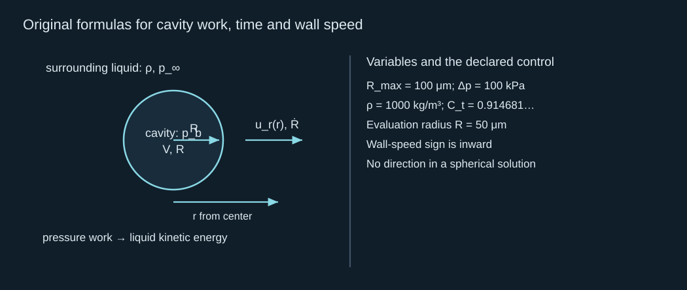
Original formulas for cavity work, time and wall speed
腔体做功、时间与壁速的原始公式
Substitution gives E_B = 4.18879×10⁻⁷ J = 0.418879 μJ, t_c = 9.14681 μs and wall speed −21.6025 m/s. The finite work becomes radial liquid kinetic energy. Spherical symmetry selects no axis, so this wall speed cannot identify a jet direction or an exterior jet mass.
代入得 E_B = 4.18879×10⁻⁷ J = 0.418879 μJ，t_c = 9.14681 μs，壁速 −21.6025 m/s。有限做功转为液体径向动能。球对称不选择轴，因此该壁速不能确定射流方向或外部射流质量。
2. Calculate pressure impulse, column speed increment and acoustic crossing time. Do multiple crossings establish precision?
2. 计算压力冲量、液柱速度增量与声传播时间。经历多次传播能否证明精确性？
Reference 2 · impulse and time have different units / 参考 2 · 冲量与时间单位不同
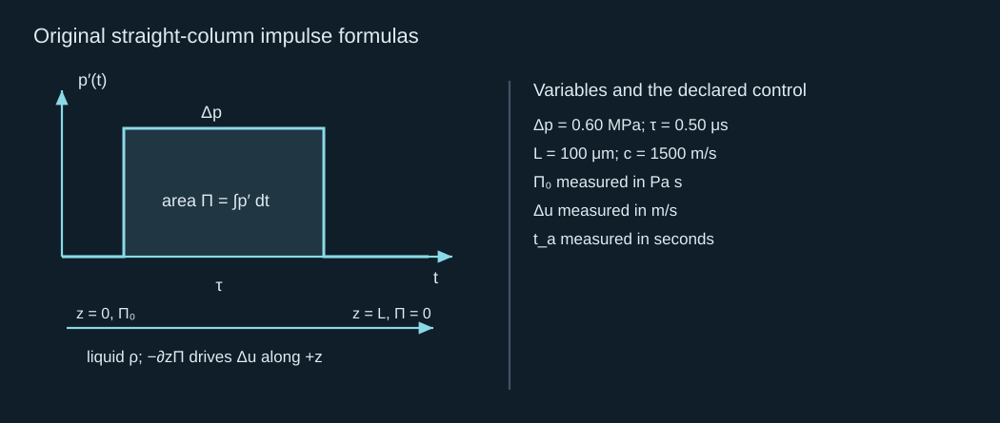
Original straight-column impulse formulas
直液柱压力冲量的原始公式
The results are 0.30 Pa s, 3.0 m/s and 0.066667 μs. The pulse spans 7.5 crossing times. Uniform speed follows from the solved linear impulse field in this one-dimensional frozen geometry. Crossing time alone provides no guarantee of uniform pressure or real-jet accuracy; changing the geometry changes the impulse gradient.
结果为 0.30 Pa s、3.0 m/s 和 0.066667 μs，脉冲跨越 7.5 个传播时间。均匀速度来自该一维冻结几何中的已解线性冲量场。单凭传播时间不能保证压力均匀或真实射流准确；几何改变会改变冲量梯度。
3. Calculate the gradient anisotropy and collapse-only impulse, then the symmetric-cycle reference. State their directions.
3. 计算梯度不对称性、仅塌缩冲量及对称周期参照，并说明方向。
Reference 3 · distinguish the integration interval / 参考 3 · 区分积分时段
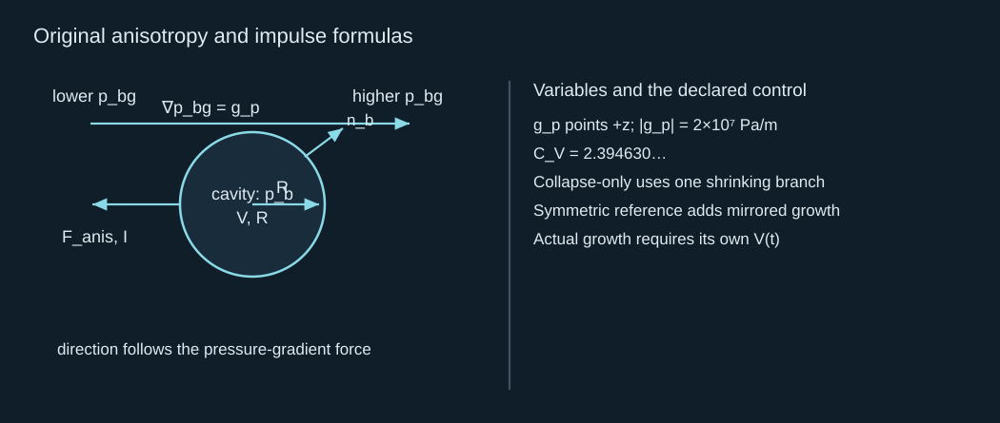
Original anisotropy and impulse formulas
不对称性与冲量的原始公式
The anisotropy vector points −z and has magnitude 0.0200. The collapse-only impulse is −4.78926×10⁻¹⁰ e_z N s; the symmetric reference is −9.57852×10⁻¹⁰ e_z N s. A growth history supplied by a thermal source need not give that factor of two. Neither impulse alone fixes filament mass or tip velocity.
不对称性向量指向 −z，大小为 0.0200。仅塌缩冲量为 −4.78926×10⁻¹⁰ e_z N s，对称参照为 −9.57852×10⁻¹⁰ e_z N s。热源给定的生长历程未必产生二倍关系。任一冲量单独均不能确定细丝质量或尖端速度。
4. For the rigid plane, calculate stand-off, equivalent anisotropy, fitted internal speed, wall Mach number and cavity impact-volume ratio.
4. 对刚性平面计算离壁比、等效不对称性、拟合内部射流速度、相应马赫数和冲击时腔体体积比。
Reference 4 · a conditional internal-jet estimate / 参考 4 · 有条件的内部射流估值
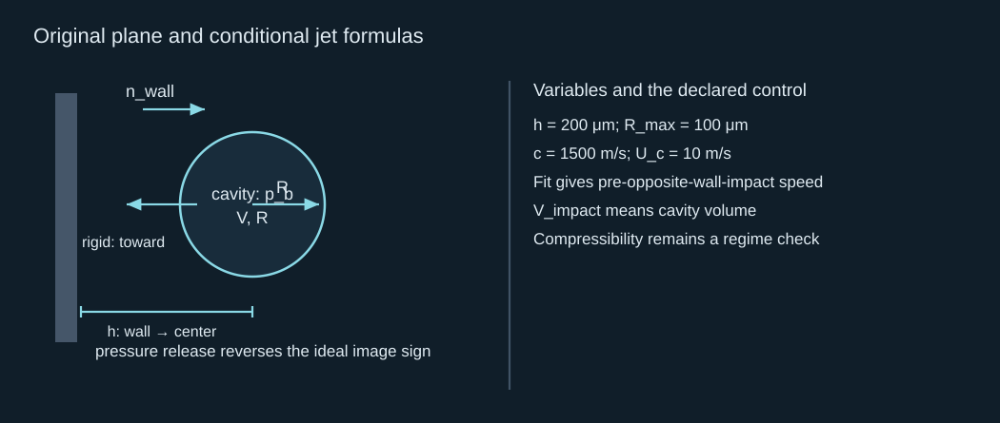
Original plane and conditional jet formulas
平面与有条件射流的原始公式
The results are γ = 2.0, ζ = 0.04875, U_jet ≈ 184.615 m/s, M ≈ 0.12308 and volume ratio 2.61422×10⁻⁴. The fitted potential-flow estimate is within the stated anisotropy interval; the Mach number motivates checking compressibility before treating the speed or impact pressure as verified. Direction is toward the rigid plane.
结果为 γ = 2.0、ζ = 0.04875、U_jet ≈ 184.615 m/s、M ≈ 0.12308，体积比为 2.61422×10⁻⁴。拟合势流估值位于所声明不对称性区间内；该马赫数要求在把速度或冲击压力视为已核验之前检查可压缩性。方向朝向刚性平面。
5. Move the plane to 100 μm. Is simply inserting the new stand-off into the inverse-anisotropy fit justified? What input is still needed to predict an exterior jet?
5. 将平面移到 100 μm。是否可以直接把新离壁比代入不对称性倒数拟合？预测外部射流还需要什么输入？
Reference 5 · close the geometry next / 参考 5 · 下一步闭合几何
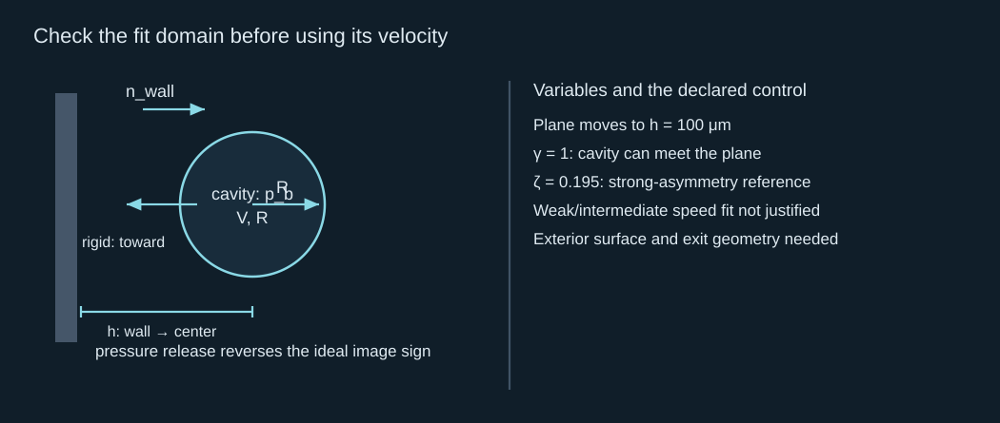
Check the fit domain before using its velocity
使用速度拟合前检查适用域
The new reference is in the strong-asymmetry range, where geometry-specific shape dynamics matter. A resolved moving interface, outer free surface or outlet, its initial shape/velocity, pressure history, boundary conditions and a gas closure are required. The direction tendency alone does not supply an exterior jet diameter, mass or speed. J02 turns those requirements into governing equations.
新参照进入强不对称范围，依赖几何的形状动力学变得重要。需要解析运动界面、外自由表面或出口、其初始形状／速度、压力历程、边界条件及气体闭合关系。仅有方向趋势不能提供外部射流直径、质量或速度。J02 将把这些要求转为支配方程。
Brief mastery response
简短掌握回答
In a few sentences, connect finite cavity work, the pressure-impulse gradient and symmetry breaking. Explain why neither radial wall speed nor integrated Kelvin impulse alone gives the useful exterior-jet output.
用几句话连接有限腔体做功、压力冲量梯度和对称性破缺。解释为什么径向壁速或积分 Kelvin 冲量单独都不能给出有用的外部射流输出。
Reference-assisted calculations are welcome. Send one short explanation in your own words; preparation of this page does not mark the chapter solved. Earlier accepted records retain their credit.
允许参照答案完成计算。请用自己的话提交一段简短解释；备妥本页不代表本章已完成。此前已接受记录的学分保留。